World City Atlas / Culture / Industry / Faith / Daily Life
世界都市を、景観から読む。
経済規模のランキングを入口にしながら、金融、港湾、宗教、生活、観光、大学、移民、産業の地層まで視覚的にたどる都市アトラスです。
ニューヨークNew York
🇺🇸 United States
金融、移民、文化が世界規模で交差する摩天楼の首都。 02
02東京Tokyo
🇯🇵 Japan
鉄道、湾岸、国家中枢が日常の密度を作る巨大都市。 03ロンドンLondon
🇬🇧 United Kingdom
王権、議会、金融、旧帝国の記憶が同居する世界都市。 04
04パリParis
🇫🇷 France
芸術、共和国、観光、移民社会が重なる欧州の象徴都市。 05
05ロサンゼルスLos Angeles
🇺🇸 United States
映像産業、移民文化、太平洋貿易が広域に広がる都市圏。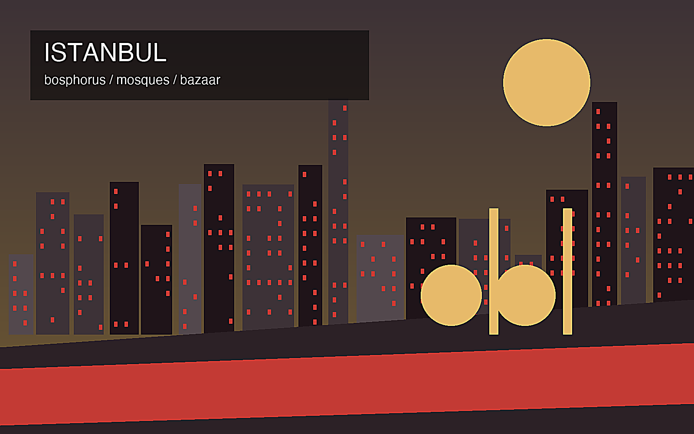
06イスタンブールIstanbul
🇹🇷 Türkiye
欧州とアジア、帝国と信仰が海峡で交差する都市。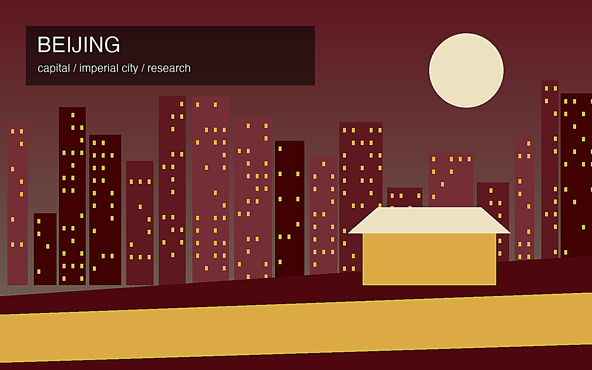
07北京Beijing
🇨🇳 China
皇城、国家権力、大学、ITが重なる中国政治の中心。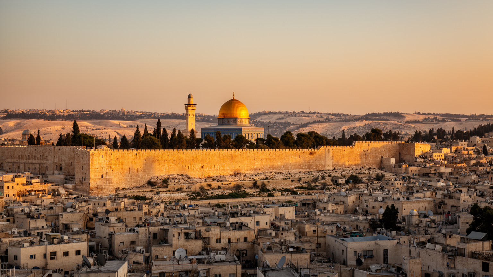
08エルサレムJerusalem
🇮🇱 / 🇵🇸 Region
三宗教の聖地と現代政治の緊張が重なる都市。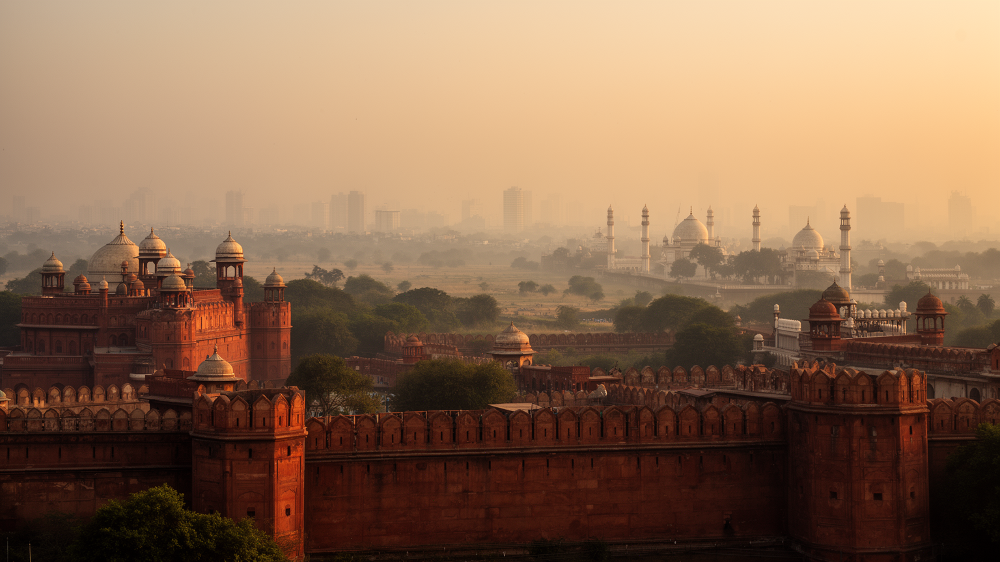
09デリーDelhi
🇮🇳 India
帝国の記憶、国家行政、急成長する生活圏が重なる首都。 10
10上海Shanghai
🇨🇳 China
港湾、金融、近代租界の記憶が中国経済を外へ開く。 11
11ワシントンDCWashington DC
🇺🇸 United States
連邦政府、外交、記念空間が国家の物語を形にする。 12
12シンガポールSingapore
🇸🇬 Singapore
海峡、金融、多民族政策が凝縮された都市国家。 13
13ドバイDubai
🇦🇪 United Arab Emirates
砂漠、港湾、航空、移民労働が未来都市像を作る。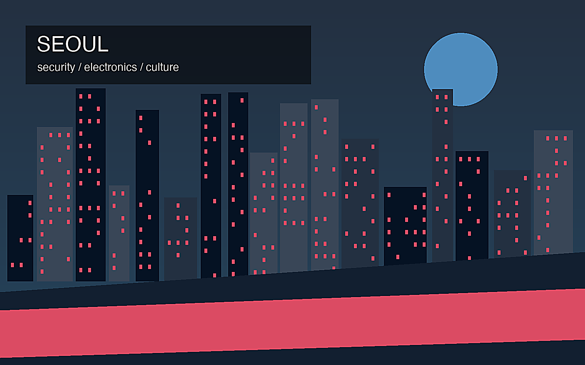
14ソウルSeoul
🇰🇷 South Korea
輸出産業、Kカルチャー、安全保障が近接する首都圏。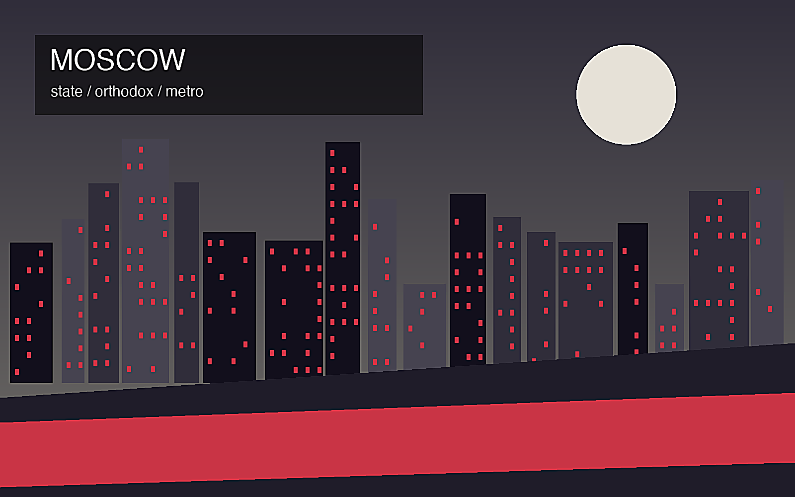
15モスクワMoscow
🇷🇺 Russia
帝国、革命、国家権力、正教文化が重なる巨大首都。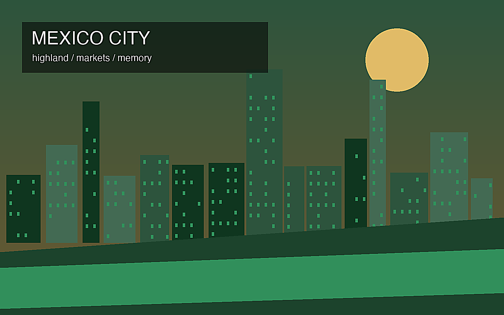
16メキシコシティMexico City
🇲🇽 Mexico
古代都市の記憶、国家行政、巨大な生活圏が重なる高地都市。 17
17カイロCairo
🇪🇬 Egypt
ナイル、イスラム都市、古代遺産、人口圧が交差する首都。 18
18ムンバイMumbai
🇮🇳 India
港湾、金融、映画、スラムと高層化が並ぶインドの入口。 19
19サンパウロSao Paulo
🇧🇷 Brazil
移民、産業、金融、格差が南米最大級の都市圏を作る。 20
20香港Hong Kong
🇭🇰 Hong Kong
港湾金融、広東文化、自由と統治の緊張が凝縮する都市。 21ジャカルタJakarta
🇮🇩 Indonesia
島嶼国家の政治、港湾、洪水、移住労働が集まる首都圏。 22
22ラゴスLagos
🇳🇬 Nigeria
ラグーン、港湾、映画、音楽、非公式労働が交差する巨大都市。 23
23ダッカDhaka
🇧🇩 Bangladesh
デルタ、縫製労働、河港、祈り、水害が重なる南アジアの首都。 24ManilaManila
World City Atlas
歴史、生活、産業、信仰を読み解く世界の重要都市。 25BangkokBangkok
World City Atlas
歴史、生活、産業、信仰を読み解く世界の重要都市。 26BerlinBerlin
World City Atlas
歴史、生活、産業、信仰を読み解く世界の重要都市。 27RomeRome
World City Atlas
歴史、生活、産業、信仰を読み解く世界の重要都市。 28Vatican CityVatican City
World City Atlas
歴史、生活、産業、信仰を読み解く世界の重要都市。 29MeccaMecca
World City Atlas
歴史、生活、産業、信仰を読み解く世界の重要都市。 30MedinaMedina
World City Atlas
歴史、生活、産業、信仰を読み解く世界の重要都市。 31VaranasiVaranasi
World City Atlas
歴史、生活、産業、信仰を読み解く世界の重要都市。 32AmritsarAmritsar
World City Atlas
歴史、生活、産業、信仰を読み解く世界の重要都市。 33LhasaLhasa
World City Atlas
歴史、生活、産業、信仰を読み解く世界の重要都市。 34KathmanduKathmandu
World City Atlas
歴史、生活、産業、信仰を読み解く世界の重要都市。 35Bodh GayaBodh Gaya
World City Atlas
歴史、生活、産業、信仰を読み解く世界の重要都市。 36KarbalaKarbala
World City Atlas
歴史、生活、産業、信仰を読み解く世界の重要都市。 37NajafNajaf
World City Atlas
歴史、生活、産業、信仰を読み解く世界の重要都市。 38QomQom
World City Atlas
歴史、生活、産業、信仰を読み解く世界の重要都市。 39MashhadMashhad
World City Atlas
歴史、生活、産業、信仰を読み解く世界の重要都市。 40Rio de JaneiroRio de Janeiro
World City Atlas
歴史、生活、産業、信仰を読み解く世界の重要都市。 41Tel AvivTel Aviv
World City Atlas
歴史、生活、産業、信仰を読み解く世界の重要都市。 42BeirutBeirut
World City Atlas
歴史、生活、産業、信仰を読み解く世界の重要都市。 43RiyadhRiyadh
World City Atlas
歴史、生活、産業、信仰を読み解く世界の重要都市。 44BaghdadBaghdad
World City Atlas
歴史、生活、産業、信仰を読み解く世界の重要都市。 45KabulKabul
World City Atlas
歴史、生活、産業、信仰を読み解く世界の重要都市。 46TehranTehran
World City Atlas
歴史、生活、産業、信仰を読み解く世界の重要都市。 47KarachiKarachi
World City Atlas
歴史、生活、産業、信仰を読み解く世界の重要都市。 48LahoreLahore
World City Atlas
歴史、生活、産業、信仰を読み解く世界の重要都市。 49KolkataKolkata
World City Atlas
歴史、生活、産業、信仰を読み解く世界の重要都市。 50ChennaiChennai
World City Atlas
歴史、生活、産業、信仰を読み解く世界の重要都市。 51BengaluruBengaluru
World City Atlas
歴史、生活、産業、信仰を読み解く世界の重要都市。 52HanoiHanoi
World City Atlas
歴史、生活、産業、信仰を読み解く世界の重要都市。 53Ho Chi Minh CityHo Chi Minh City
World City Atlas
歴史、生活、産業、信仰を読み解く世界の重要都市。 54Phnom PenhPhnom Penh
World City Atlas
歴史、生活、産業、信仰を読み解く世界の重要都市。 55Siem ReapSiem Reap
World City Atlas
歴史、生活、産業、信仰を読み解く世界の重要都市。 56YangonYangon
World City Atlas
歴史、生活、産業、信仰を読み解く世界の重要都市。 57TaipeiTaipei
World City Atlas
歴史、生活、産業、信仰を読み解く世界の重要都市。 58ShenzhenShenzhen
World City Atlas
歴史、生活、産業、信仰を読み解く世界の重要都市。 59GuangzhouGuangzhou
World City Atlas
歴史、生活、産業、信仰を読み解く世界の重要都市。 60ChengduChengdu
World City Atlas
歴史、生活、産業、信仰を読み解く世界の重要都市。 61ChongqingChongqing
World City Atlas
歴史、生活、産業、信仰を読み解く世界の重要都市。 62WuhanWuhan
World City Atlas
歴史、生活、産業、信仰を読み解く世界の重要都市。 63HangzhouHangzhou
World City Atlas
歴史、生活、産業、信仰を読み解く世界の重要都市。 64NanjingNanjing
World City Atlas
歴史、生活、産業、信仰を読み解く世界の重要都市。 65TianjinTianjin
World City Atlas
歴史、生活、産業、信仰を読み解く世界の重要都市。 66
66大阪Osaka
World City Atlas
歴史、生活、産業、信仰を読み解く世界の重要都市。 67
67名古屋Nagoya
World City Atlas
歴史、生活、産業、信仰を読み解く世界の重要都市。 68BusanBusan
World City Atlas
歴史、生活、産業、信仰を読み解く世界の重要都市。 69SydneySydney
World City Atlas
歴史、生活、産業、信仰を読み解く世界の重要都市。 70MelbourneMelbourne
World City Atlas
歴史、生活、産業、信仰を読み解く世界の重要都市。 71TorontoToronto
World City Atlas
歴史、生活、産業、信仰を読み解く世界の重要都市。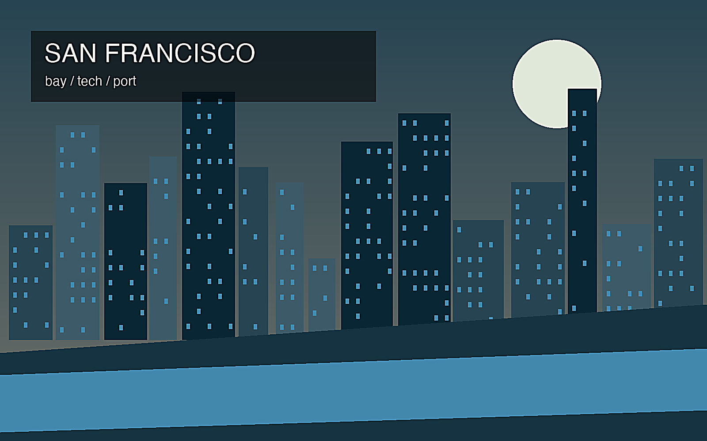
72サンフランシスコSan Francisco
World City Atlas
歴史、生活、産業、信仰を読み解く世界の重要都市。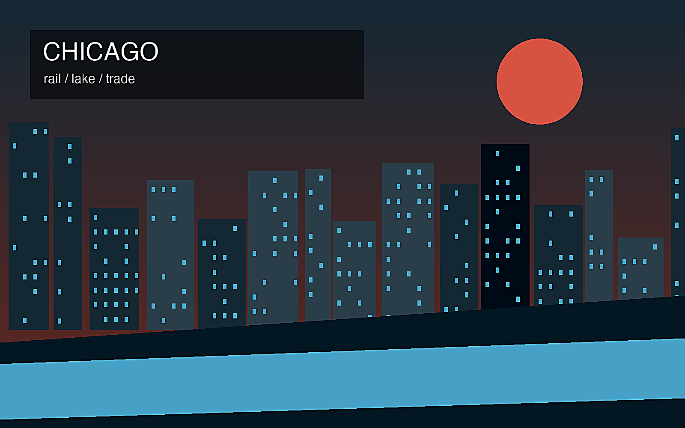
73シカゴChicago
World City Atlas
歴史、生活、産業、信仰を読み解く世界の重要都市。 74MiamiMiami
World City Atlas
歴史、生活、産業、信仰を読み解く世界の重要都市。 75
75ヒューストンHouston
World City Atlas
歴史、生活、産業、信仰を読み解く世界の重要都市。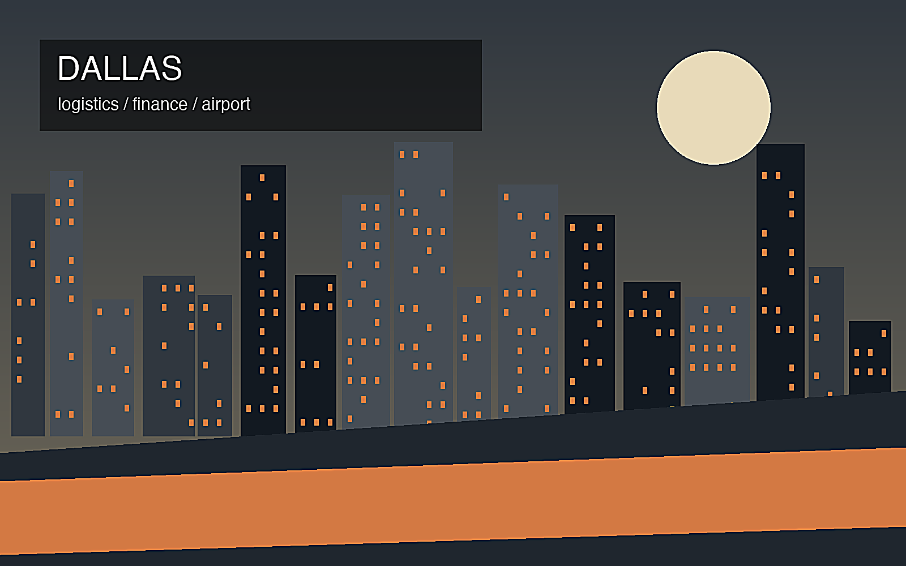
76ダラスDallas
World City Atlas
歴史、生活、産業、信仰を読み解く世界の重要都市。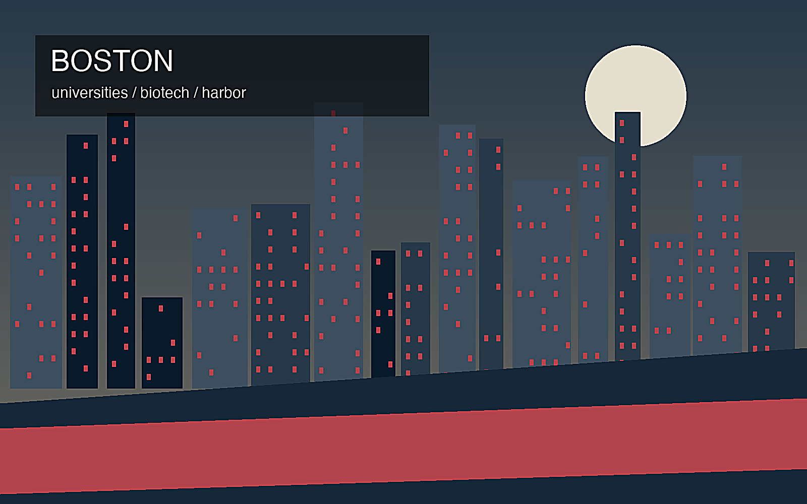
77ボストンBoston
World City Atlas
歴史、生活、産業、信仰を読み解く世界の重要都市。 78
78フィラデルフィアPhiladelphia
World City Atlas
歴史、生活、産業、信仰を読み解く世界の重要都市。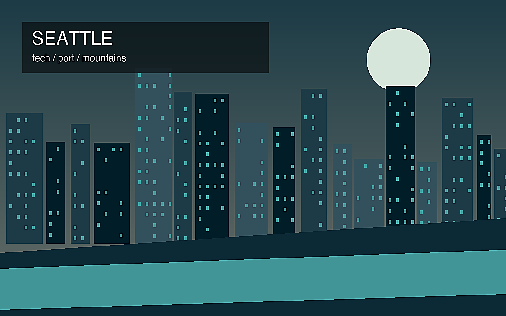
79シアトルSeattle
World City Atlas
歴史、生活、産業、信仰を読み解く世界の重要都市。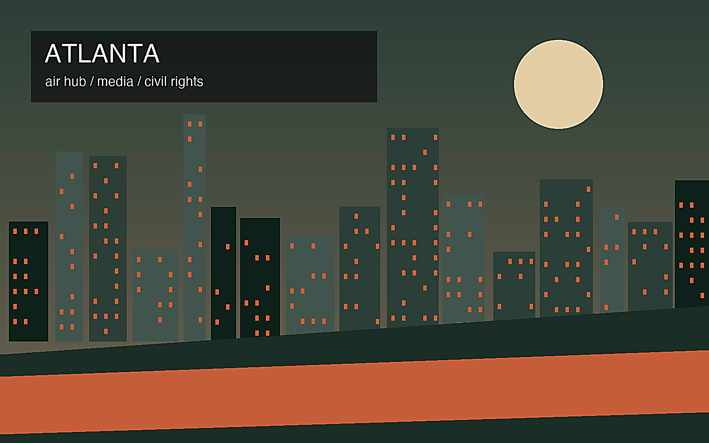
80アトランタAtlanta
World City Atlas
歴史、生活、産業、信仰を読み解く世界の重要都市。 81DetroitDetroit
World City Atlas
歴史、生活、産業、信仰を読み解く世界の重要都市。 82San JoseSan Jose
World City Atlas
歴史、生活、産業、信仰を読み解く世界の重要都市。 83San DiegoSan Diego
World City Atlas
歴史、生活、産業、信仰を読み解く世界の重要都市。 84PhoenixPhoenix
World City Atlas
歴史、生活、産業、信仰を読み解く世界の重要都市。 85DenverDenver
World City Atlas
歴史、生活、産業、信仰を読み解く世界の重要都市。 86MinneapolisMinneapolis
World City Atlas
歴史、生活、産業、信仰を読み解く世界の重要都市。 87BaltimoreBaltimore
World City Atlas
歴史、生活、産業、信仰を読み解く世界の重要都市。 88AustinAustin
World City Atlas
歴史、生活、産業、信仰を読み解く世界の重要都市。 89OrlandoOrlando
World City Atlas
歴史、生活、産業、信仰を読み解く世界の重要都市。 90New OrleansNew Orleans
World City Atlas
歴史、生活、産業、信仰を読み解く世界の重要都市。 91HavanaHavana
World City Atlas
歴史、生活、産業、信仰を読み解く世界の重要都市。 92San JuanSan Juan
World City Atlas
歴史、生活、産業、信仰を読み解く世界の重要都市。 93Santo DomingoSanto Domingo
World City Atlas
歴史、生活、産業、信仰を読み解く世界の重要都市。 94Port-au-PrincePort-au-Prince
World City Atlas
歴史、生活、産業、信仰を読み解く世界の重要都市。 95KingstonKingston
World City Atlas
歴史、生活、産業、信仰を読み解く世界の重要都市。 96Guatemala CityGuatemala City
World City Atlas
歴史、生活、産業、信仰を読み解く世界の重要都市。 97San SalvadorSan Salvador
World City Atlas
歴史、生活、産業、信仰を読み解く世界の重要都市。 98TegucigalpaTegucigalpa
World City Atlas
歴史、生活、産業、信仰を読み解く世界の重要都市。 99ManaguaManagua
World City Atlas
歴史、生活、産業、信仰を読み解く世界の重要都市。 100Panama CityPanama City
World City Atlas
歴史、生活、産業、信仰を読み解く世界の重要都市。 101BogotaBogota
World City Atlas
歴史、生活、産業、信仰を読み解く世界の重要都市。 102MedellinMedellin
World City Atlas
歴史、生活、産業、信仰を読み解く世界の重要都市。 103CartagenaCartagena
World City Atlas
歴史、生活、産業、信仰を読み解く世界の重要都市。 104QuitoQuito
World City Atlas
歴史、生活、産業、信仰を読み解く世界の重要都市。 105LimaLima
World City Atlas
歴史、生活、産業、信仰を読み解く世界の重要都市。 106CuscoCusco
World City Atlas
歴史、生活、産業、信仰を読み解く世界の重要都市。 107La PazLa Paz
World City Atlas
歴史、生活、産業、信仰を読み解く世界の重要都市。 108SucreSucre
World City Atlas
歴史、生活、産業、信仰を読み解く世界の重要都市。 109SantiagoSantiago
World City Atlas
歴史、生活、産業、信仰を読み解く世界の重要都市。 110ValparaisoValparaiso
World City Atlas
歴史、生活、産業、信仰を読み解く世界の重要都市。 111Buenos AiresBuenos Aires
World City Atlas
歴史、生活、産業、信仰を読み解く世界の重要都市。 112MontevideoMontevideo
World City Atlas
歴史、生活、産業、信仰を読み解く世界の重要都市。 113BrasiliaBrasilia
World City Atlas
歴史、生活、産業、信仰を読み解く世界の重要都市。 114Salvador da BahiaSalvador da Bahia
World City Atlas
歴史、生活、産業、信仰を読み解く世界の重要都市。 115RecifeRecife
World City Atlas
歴史、生活、産業、信仰を読み解く世界の重要都市。 116BelemBelem
World City Atlas
歴史、生活、産業、信仰を読み解く世界の重要都市。 117ManausManaus
World City Atlas
歴史、生活、産業、信仰を読み解く世界の重要都市。 118CasablancaCasablanca
World City Atlas
歴史、生活、産業、信仰を読み解く世界の重要都市。 119MarrakechMarrakech
World City Atlas
歴史、生活、産業、信仰を読み解く世界の重要都市。 120FezFez
World City Atlas
歴史、生活、産業、信仰を読み解く世界の重要都市。 121TimbuktuTimbuktu
World City Atlas
歴史、生活、産業、信仰を読み解く世界の重要都市。 122DakarDakar
World City Atlas
歴史、生活、産業、信仰を読み解く世界の重要都市。 123AccraAccra
World City Atlas
歴史、生活、産業、信仰を読み解く世界の重要都市。 124Addis AbabaAddis Ababa
World City Atlas
歴史、生活、産業、信仰を読み解く世界の重要都市。 125NairobiNairobi
World City Atlas
歴史、生活、産業、信仰を読み解く世界の重要都市。 126MombasaMombasa
World City Atlas
歴史、生活、産業、信仰を読み解く世界の重要都市。 127Zanzibar CityZanzibar City
World City Atlas
歴史、生活、産業、信仰を読み解く世界の重要都市。 128KigaliKigali
World City Atlas
歴史、生活、産業、信仰を読み解く世界の重要都市。 129KinshasaKinshasa
World City Atlas
歴史、生活、産業、信仰を読み解く世界の重要都市。 130GomaGoma
World City Atlas
歴史、生活、産業、信仰を読み解く世界の重要都市。 131LuandaLuanda
World City Atlas
歴史、生活、産業、信仰を読み解く世界の重要都市。 132MaputoMaputo
World City Atlas
歴史、生活、産業、信仰を読み解く世界の重要都市。 133Cape TownCape Town
World City Atlas
歴史、生活、産業、信仰を読み解く世界の重要都市。 134MogadishuMogadishu
World City Atlas
歴史、生活、産業、信仰を読み解く世界の重要都市。 135HargeisaHargeisa
World City Atlas
歴史、生活、産業、信仰を読み解く世界の重要都市。 136KhartoumKhartoum
World City Atlas
歴史、生活、産業、信仰を読み解く世界の重要都市。 137JubaJuba
World City Atlas
歴史、生活、産業、信仰を読み解く世界の重要都市。 138TunisTunis
World City Atlas
歴史、生活、産業、信仰を読み解く世界の重要都市。 139AlgiersAlgiers
World City Atlas
歴史、生活、産業、信仰を読み解く世界の重要都市。 140LuxorLuxor
World City Atlas
歴史、生活、産業、信仰を読み解く世界の重要都市。 141GizaGiza
World City Atlas
歴史、生活、産業、信仰を読み解く世界の重要都市。 142AlexandriaAlexandria
World City Atlas
歴史、生活、産業、信仰を読み解く世界の重要都市。 143AswanAswan
World City Atlas
歴史、生活、産業、信仰を読み解く世界の重要都市。 144Wadi Musa / PetraWadi Musa / Petra
World City Atlas
歴史、生活、産業、信仰を読み解く世界の重要都市。 145IsfahanIsfahan
World City Atlas
歴史、生活、産業、信仰を読み解く世界の重要都市。 146ShirazShiraz
World City Atlas
歴史、生活、産業、信仰を読み解く世界の重要都市。 147YazdYazd
World City Atlas
歴史、生活、産業、信仰を読み解く世界の重要都市。 148SamarkandSamarkand
World City Atlas
歴史、生活、産業、信仰を読み解く世界の重要都市。 149BukharaBukhara
World City Atlas
歴史、生活、産業、信仰を読み解く世界の重要都市。 150KhivaKhiva
World City Atlas
歴史、生活、産業、信仰を読み解く世界の重要都市。 151MadridMadrid
World City Atlas
歴史、生活、産業、信仰を読み解く世界の重要都市。 152BarcelonaBarcelona
World City Atlas
歴史、生活、産業、信仰を読み解く世界の重要都市。 153GranadaGranada
World City Atlas
歴史、生活、産業、信仰を読み解く世界の重要都市。 154SevilleSeville
World City Atlas
歴史、生活、産業、信仰を読み解く世界の重要都市。 155LisbonLisbon
World City Atlas
歴史、生活、産業、信仰を読み解く世界の重要都市。 156DublinDublin
World City Atlas
歴史、生活、産業、信仰を読み解く世界の重要都市。 157BelfastBelfast
World City Atlas
歴史、生活、産業、信仰を読み解く世界の重要都市。 158AmsterdamAmsterdam
World City Atlas
歴史、生活、産業、信仰を読み解く世界の重要都市。 159BrusselsBrussels
World City Atlas
歴史、生活、産業、信仰を読み解く世界の重要都市。 160ZurichZurich
World City Atlas
歴史、生活、産業、信仰を読み解く世界の重要都市。 161FrankfurtFrankfurt
World City Atlas
歴史、生活、産業、信仰を読み解く世界の重要都市。 162MunichMunich
World City Atlas
歴史、生活、産業、信仰を読み解く世界の重要都市。 163HamburgHamburg
World City Atlas
歴史、生活、産業、信仰を読み解く世界の重要都市。 164StuttgartStuttgart
World City Atlas
歴史、生活、産業、信仰を読み解く世界の重要都市。 165Central German Metropolitan RegionCentral German Metropolitan Region
World City Atlas
歴史、生活、産業、信仰を読み解く世界の重要都市。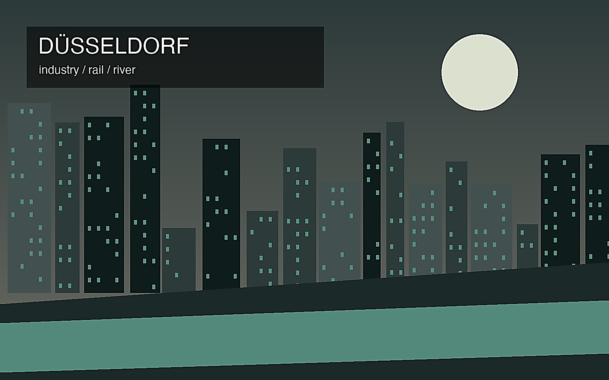
166ライン・ルールRhine-Ruhr
World City Atlas
歴史、生活、産業、信仰を読み解く世界の重要都市。 167RuhrRuhr
World City Atlas
歴史、生活、産業、信仰を読み解く世界の重要都市。 168MilanMilan
World City Atlas
歴史、生活、産業、信仰を読み解く世界の重要都市。 169NaplesNaples
World City Atlas
歴史、生活、産業、信仰を読み解く世界の重要都市。 170PalermoPalermo
World City Atlas
歴史、生活、産業、信仰を読み解く世界の重要都市。 171FlorenceFlorence
World City Atlas
歴史、生活、産業、信仰を読み解く世界の重要都市。 172VeniceVenice
World City Atlas
歴史、生活、産業、信仰を読み解く世界の重要都市。 173SarajevoSarajevo
World City Atlas
歴史、生活、産業、信仰を読み解く世界の重要都市。 174MostarMostar
World City Atlas
歴史、生活、産業、信仰を読み解く世界の重要都市。 175BelgradeBelgrade
World City Atlas
歴史、生活、産業、信仰を読み解く世界の重要都市。 176KyivKyiv
World City Atlas
歴史、生活、産業、信仰を読み解く世界の重要都市。 177OdesaOdesa
World City Atlas
歴史、生活、産業、信仰を読み解く世界の重要都市。 178LvivLviv
World City Atlas
歴史、生活、産業、信仰を読み解く世界の重要都市。 179VilniusVilnius
World City Atlas
歴史、生活、産業、信仰を読み解く世界の重要都市。 180RigaRiga
World City Atlas
歴史、生活、産業、信仰を読み解く世界の重要都市。 181TallinnTallinn
World City Atlas
歴史、生活、産業、信仰を読み解く世界の重要都市。 182KrakowKrakow
World City Atlas
歴史、生活、産業、信仰を読み解く世界の重要都市。 183GdanskGdansk
World City Atlas
歴史、生活、産業、信仰を読み解く世界の重要都市。 184DubrovnikDubrovnik
World City Atlas
歴史、生活、産業、信仰を読み解く世界の重要都市。 185NicosiaNicosia
World City Atlas
歴史、生活、産業、信仰を読み解く世界の重要都市。 186VallettaValletta
World City Atlas
歴史、生活、産業、信仰を読み解く世界の重要都市。 187ReykjavikReykjavik
World City Atlas
歴史、生活、産業、信仰を読み解く世界の重要都市。 188StockholmStockholm
World City Atlas
歴史、生活、産業、信仰を読み解く世界の重要都市。 189MontrealMontreal
World City Atlas
歴史、生活、産業、信仰を読み解く世界の重要都市。 190PortlandPortland
World City Atlas
歴史、生活、産業、信仰を読み解く世界の重要都市。 191NashvilleNashville
World City Atlas
歴史、生活、産業、信仰を読み解く世界の重要都市。 192PittsburghPittsburgh
World City Atlas
歴史、生活、産業、信仰を読み解く世界の重要都市。 193CincinnatiCincinnati
World City Atlas
歴史、生活、産業、信仰を読み解く世界の重要都市。 194St. LouisSt. Louis
World City Atlas
歴史、生活、産業、信仰を読み解く世界の重要都市。 195IndianapolisIndianapolis
World City Atlas
歴史、生活、産業、信仰を読み解く世界の重要都市。 196CharlotteCharlotte
World City Atlas
歴史、生活、産業、信仰を読み解く世界の重要都市。 197TampaTampa
World City Atlas
歴史、生活、産業、信仰を読み解く世界の重要都市。 198RiversideRiverside
World City Atlas
歴史、生活、産業、信仰を読み解く世界の重要都市。 199SacramentoSacramento
World City Atlas
歴史、生活、産業、信仰を読み解く世界の重要都市。 200ColomboColombo
World City Atlas
歴史、生活、産業、信仰を読み解く世界の重要都市。